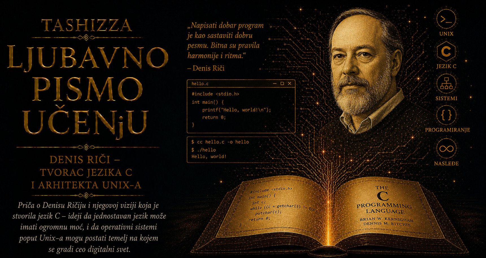

Ljubavno pismo učenju

Početkom sedamdesetih godina program je često pripadao računaru za koji je napisan gotovo jednako čvrsto kao i njegovi fizički delovi. Sistemski softver, najdublji sloj koji upravlja procesorom, memorijom, datotekama i uređajima, uglavnom je nastajao u asemblerskom jeziku određenog procesora. Takav kod mogao je da bude brz i precizno prilagođen mašini, ali je promena hardvera pretila da godine rada pretvori u nasleđe koje se mora ponovo pisati. Svaka računarska porodica imala je sopstvene registre, naredbe, adresiranje i osobenosti, pa je preseljenje operativnog sistema na novu arhitekturu često bilo nalik njegovoj ponovnoj izgradnji.
Jezici višeg nivoa već su postojali, ali većina nije bila oblikovana za pisanje samog temelja računarskog sistema. Fortran je bio izuzetno uspešan u numeričkim proračunima, COBOL u poslovnoj obradi podataka, dok je ALGOL snažno uticao na strukturu modernih programskih jezika. Sistemsko programiranje zahtevalo je drugačiju ravnotežu: jezik je morao da oslobodi programera od pojedinosti jednog procesora, a da mu ipak sačuva mogućnost neposrednog rada sa memorijom, adresama, bitovima i uređajima. Između apstrakcije i kontrole postojao je uzak prostor koji još nije imao svoj dovoljno praktičan jezik.
Dennis Ritchie pronašao je taj prostor tokom razvoja Unixa u Bellovim laboratorijama. Prve verzije sistema koji je Ken Thompson pokrenuo bile su napisane u asembleru, pa je njihova budućnost zavisila od računara za koji su nastale. Thompson je prethodno razvio jezik B, oslanjajući se na BCPL Martina Richardsa, ali njegov jednostavan model podataka nije dovoljno dobro odgovarao mogućnostima novog računara PDP-11. Ritchie je iz tog razvojnog niza oblikovao C, uvodeći bogatiji sistem tipova, strukture za grupisanje podataka, pokazivače, nizove i mehanizme koji su omogućavali da se niskonivojske operacije izraze preglednije i sa manje koda.
C je programeru ponudio dovoljno jasnu apstrakciju da složen sistem može biti razložen na funkcije, datoteke i uređene strukture podataka, ali je sačuvao vidljivu vezu sa načinom na koji mašina zaista radi. Pokazivači su omogućavali neposredno označavanje adresa u memoriji, bitovski operatori preciznu obradu delova mašinske reči, dok su tipovi podataka pomagali kompajleru da organizuje memoriju i stvara efikasan izvršni kod. Ritchie nije pokušavao da ukloni svaku opasnost iz jezika, jer bi time uklonio i deo kontrole potrebne operativnom sistemu. Programeru je poverio veliku moć, zajedno sa odgovornošću da razume njene posledice.
Najvažnija promena nije se ogledala samo u tome što je kod postao čitljiviji od asemblera. Isti izvorni program mogao je, uz ograničen broj prilagođavanja, da bude preveden za različite računarske arhitekture. C je omogućio da se pažnja programera premesti sa registara jednog procesora na strukturu samog problema, dok je kompajler preuzimao posao pretvaranja te zamisli u konkretne mašinske naredbe. Time je softver dobio mogućnost da traje duže od hardvera na kojem je prvobitno razvijen.
Presudna provera jezika došla je kada su Thompson i Ritchie najveći deo Unixa ponovo napisali u C-u. Operativni sistem, tradicionalno smatran neraskidivo vezanim za procesor, postao je prenosiv u meri koja je tada bila izuzetna. Pri preseljenju na novu mašinu prilagođavali su se ograničeni delovi neposredno povezani sa hardverom, dok je najveći deo izvornog koda mogao da ostane nepromenjen. Unix je C-u pružio dovoljno zahtevno stvarno okruženje da pokaže svoju snagu, a C je Unixu omogućio da napusti granice prvobitne laboratorijske mašine.
Upravo se tu najjasnije razdvajaju, ali i dopunjuju doprinosi dvojice saradnika. Thompson je oblikovao Unixovo okruženje procesa, datoteka, komandnog interpretera i malih alata koji se mogu povezivati, dok je Ritchie stvorio jezik u kojem je ta arhitektura mogla biti izražena, održavana i prenesena na novu platformu. Njihovo delo raslo je u neprekidnom razgovoru: potrebe operativnog sistema usmeravale su razvoj jezika, a nove mogućnosti jezika otvarale su prostor za preuređenje sistema. C i Unix postali su uzajamni dokaz vrednosti drugoga.
Ritchiejev dizajn bio je upečatljiv po odsustvu suvišnih konstrukcija. Jezgro jezika ostalo je relativno malo, dok su se brojne mogućnosti premeštale u biblioteke koje su programeri mogli da razvijaju, zamenjuju i prenose. Takva organizacija nije pokušavala da u sam jezik ugradi odgovor na svaku oblast programiranja. Ona je pružala stabilnu gramatiku nad kojom su mogli da rastu kompajleri, uređivači, baze podataka, mrežni programi, grafički sistemi, naučne aplikacije i softver namenjen uređajima čiji tvorci C-a nisu mogli ni da zamisle.
Brian Kernighan rano je prepoznao da novom jeziku, pored kompajlera i uspešnog operativnog sistema, treba i izuzetno jasno objašnjenje. Sa Ritchijem je 1978. godine objavio knjigu The C Programming Language, među programerima poznatu kao K&R. Njena sažetost nije poticala iz površnosti, već iz pažljivo odabranog redosleda kojim čitalac upoznaje sve složenije pojmove. Primer „hello, world” iz te knjige prerastao je u gotovo univerzalni pozdrav pri prvom susretu sa novim programskim jezikom, dok je Ritchiejev referentni priručnik godinama služio kao praktična definicija C-a.
Širenje jezika donelo je različite dijalekte, proširenja i ponašanja kompajlera koja su pretila da oslabe prenosivost zbog koje je C postao značajan. Proces standardizacije doveo je 1989. godine do standarda poznatog kao ANSI C, kasnije prihvaćenog i na međunarodnom nivou. Preciznije deklaracije funkcija, uređene standardne biblioteke i jasnije definisano ponašanje programa omogućili su da jezik nastavi da se razvija bez olakog napuštanja ogromnog nasleđa postojećeg koda. C je tako prerastao laboratorijsko poreklo i postao zajednički sporazum čitave industrije.
Ritchiejev jezik proširio se mnogo dalje od Unixa. Njime su pisana jezgra operativnih sistema, kompajleri, baze podataka, mrežne biblioteke, upravljački programi i softver ugrađen u automobile, industrijsku opremu, rutere, medicinske uređaje i bezbrojne sisteme koje korisnik nikada neće neposredno videti. Njegov sintaksički uticaj prešao je u C++, Objective-C, Javu, C#, JavaScript i brojne druge jezike. Programeri koji nikada nisu napisali ozbiljan program u C-u često ipak koriste vitičaste zagrade, izraze, petlje i kontrolne strukture čiji je savremeni oblik nastao u njegovom okruženju.
Dugovečnost C-a donela je i cenu njegovih prvobitnih odluka. Neposredan rad sa memorijom pruža izuzetnu efikasnost, ali pogrešan pokazivač, prekoračenje granica bafera ili nepravilno upravljanje životnim vekom podataka mogu izazvati kvarove i ozbiljne bezbednosne slabosti. Jezik je nastao za stručnjake koji su pisali sistemski softver na računarima sa veoma ograničenim resursima, mnogo pre sveta u kojem su milijarde uređaja stalno povezane na mrežu i izložene napadima. Savremeni jezici zato često uvode automatsko upravljanje memorijom, strožu proveru tipova i zaštitu od čitavih grupa grešaka.
Te teškoće ne poništavaju Ritchiejev uspeh, već otkrivaju razmere promene kroz koju je njegov jezik prošao. C je nadživeo hardver, organizacije i namene za koje je prvobitno stvoren zato što je njegov osnovni model dobro birao granicu između ljudske zamisli i fizičke mašine. Programer je mogao da razmišlja o funkcijama i strukturama podataka, dok je istovremeno zadržavao svest o rasporedu memorije i ceni izvršavanja. Ta precizna blizina hardveru učinila je C pogodnim za izgradnju slojeva na kojima počivaju udobniji jezici i aplikacije.
Naslov o otvorenom softveru u kojem se nalazi ova priča zahteva važnu istorijsku nijansu. C nije nastao kao savremeni projekat slobodnog softvera, a rani Unix širio se pod licencama kompanije AT&T koje su se vremenom menjale i postajale restriktivnije. Ipak, dostupnost izvornog koda univerzitetima omogućila je generacijama studenata da proučavaju stvarni operativni sistem i jezik kojim je napisan. Iz te kulture čitanja, menjanja, prenošenja i zajedničkog usavršavanja izrasli su BSD, GNU, Linux i šire uverenje da pristup kodu može predstavljati obrazovno dobro i osnovu tehnološke slobode.
Ritchie nije izgradio poslovnu imperiju oko svog jezika niti je pokušavao da zadrži svaki njegov budući oblik pod ličnom kontrolom. Stvorio je sredstvo dovoljno precizno da rešava stvarne probleme i dovoljno otvoreno da ga drugi proširuju, standardizuju i koriste za dela koja nije mogao unapred da odredi. Takav način stvaranja pripada najdubljem smislu otvorenosti: vrednost ideje raste kada ona postane pouzdan temelj tuđe domišljatosti.
Digitalni svet često slavi ono što se vidi na ekranu, dok njegovi presudni slojevi ostaju skriveni ispod površine. C pripada tim tihim temeljima. Njime su izgrađeni sistemi koji pokreću računare, jezici koji izvršavaju savremene aplikacije i biblioteke kroz koje uređaji razgovaraju sa hardverom i mrežom. Dennis Ritchie dao je programerima jezik kojim ideja može prići dovoljno blizu mašini da njome upravlja, a ipak ostati dovoljno nezavisna da preživi trenutak u kojem ta mašina postane prošlost.